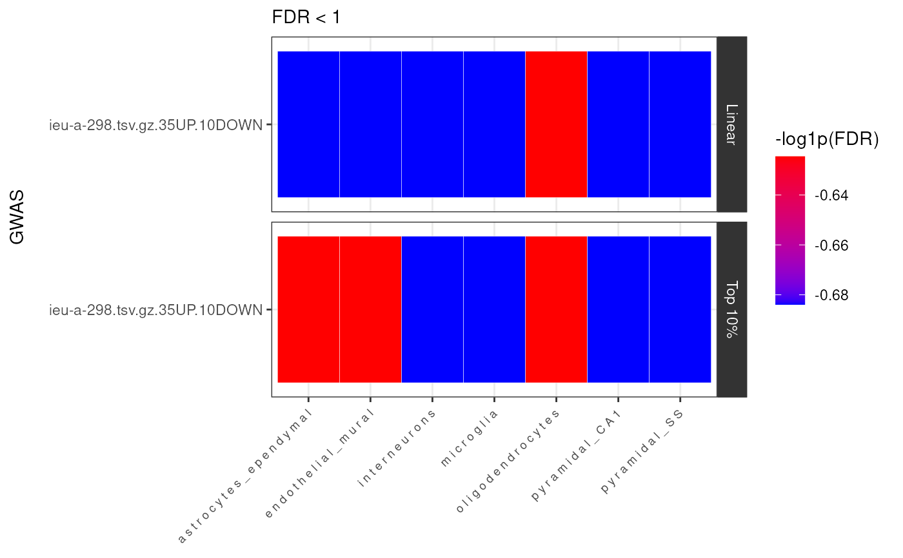

Plot of GWAS x cell-type enrichment results from celltype_associations_pipeline.
results_heatmap(
merged_results,
title = NULL,
x_lab = NULL,
fdr_thresh = 0.05,
facet_formula = "EnrichmentMode ~ .",
x_var = "Celltype",
y_var = "GWAS",
fill_var = "-log1p(FDR)",
scales = "free_y",
space = "fixed",
show_plot = TRUE,
height = 5,
width = 7,
dpi = 300,
save_path = file.path(tempdir(), "MAGMA_Celltyping.heatmap.jpg")
)Enrichment results generated by celltype_associations_pipeline and merged by merge_results.
Plot title.
Plot x-axis label.
FDR filtering threshold.
Facet formula for plot, passed to facet_grid.
x-axis variable.
y-axis variable.
Fill variable.
Are scales shared across all facets (the default,
"fixed"), or do they vary across rows ("free_x"),
columns ("free_y"), or both rows and columns ("free")?
If "fixed", the default, all panels have the same size.
If "free_y" their height will be proportional to the length of the
y scale; if "free_x" their width will be proportional to the
length of the x scale; or if "free" both height and width will
vary. This setting has no effect unless the appropriate scales also vary.
Whether to print the plot.
Plot size in units ("in", "cm", "mm", or "px").
If not supplied, uses the size of current graphics device.
Plot size in units ("in", "cm", "mm", or "px").
If not supplied, uses the size of current graphics device.
Plot resolution. Also accepts a string input: "retina" (320), "print" (300), or "screen" (72). Applies only to raster output types.
Path to save plot to.
ggplot object.
MAGMA_results <- MAGMA.Celltyping::enrichment_results
merged_results <- MAGMA.Celltyping::merge_results(MAGMA_results)
#> Saving full merged results to ==> /tmp/RtmpIR74Kb/MAGMA_celltyping..lvl1.csv
heat <- MAGMA.Celltyping::results_heatmap(
merged_results = merged_results,
fdr_thresh = 1)
#> 28 results @ FDR < 1
